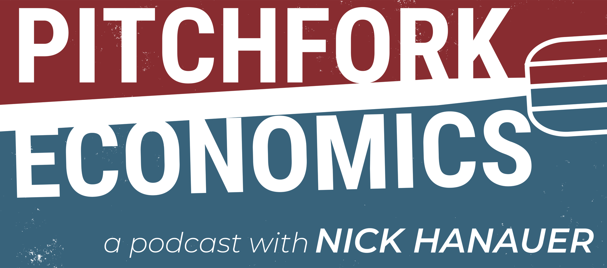

2024
A New Economics Takes Hold
Democracy Journal
Entrepreneur, Investor, Civic Leader
Nick Hanauer is a business leader and public advocate whose work focuses on building a more inclusive economy and a more resilient democracy.
Amazon
aQuantive
Civic Ventures
TED
About
Nick Hanauer is a successful business leader, entrepreneur, and venture capitalist. Hanauer has founded, co-founded, or invested in dozens of companies. He was the first non-family investor in Amazon.com, and a company he founded, aQuantive, later sold to Microsoft for 6.4 billion dollars.
In recent years, Hanauer has established himself as a civic innovator, public speaker, and fierce critic of America’s growing income inequality. He is the founder of Civic Ventures, a public policy incubator in Seattle devoted to catalyzing significant social change, and the co-author of two bestselling books, The True Patriot and Gardens of Democracy. His policy pieces for outlets including Politico, Bloomberg News, and TED have gone viral, reaching audiences of tens of millions.
In the Media


Nick On Economics
The tenets of trickle-down economics, tax cuts for the rich, deregulation for the powerful, and wage suppression for working people, have turned economic inequality into the defining issue of our time.
“ People are angry. And they have a right to be angry. Because they’ve been taken advantage of for 40 years. Now, what we do with that anger, how we express it, what change we enact to remedy it: that’s the question. Because if you don’t get economics right, the pitchforks will come out. — Nick Hanauer

Pitchfork Economics with Nick Hanauer is a podcast about who gets what and why in the American economy. Everything you learned in Econ 101 is wrong.
Publications
2024
Democracy Journal
2024
The New Republic
2023
TIME
2023
The American Prospect
2023
The American Prospect
2022
Democracy Journal
2022
The New Republic
2021
The New Republic
2021
The Seattle Times
2020
TIME
2020
The American Prospect
2019
Business Insider
2019
Politico
2018
The American Prospect
2017
Politico
2016
TED Ideas
2015
The Atlantic
2014
Politico
Civic Ventures
“How do I turn $1 million of giving into $1 billion of social change?” — Nick Hanauer
Founded by Nick in 2015, Civic Ventures is a group of political troublemakers devoted to ideas, policies, and actions that catalyze significant social change.
By thinking, writing, and acting outside the realm of conventional political discourse, Civic Ventures drives the economic conversation and fundamentally alters the status quo in Seattle, Washington state, and the United States.
Business
He is one of the most successful entrepreneurs, investors, and managers in the Northwest, with more than 30 years of experience across a broad range of industries including manufacturing, retailing, e-commerce, digital media and advertising, software, aerospace, health care, and finance.
That experience and perspective have produced an unusual record of serial success. Over the course of his career, he has managed, founded, or financed more than 30 companies, creating aggregate market value in the tens of billions of dollars.
Notable Companies
First non-family investor.
Notable Companies
Purchased by Microsoft in 2007 for $6.4 billion.
Notable Companies
Purchased by Boeing for $400 million.
Notable Companies
Purchased by Trulia in 2013 for $350 million.
Second Avenue Partners
Nick is currently a partner at Second Avenue Partners, a Seattle-based provider of management, strategy, and capital for early stage companies in the Greater Puget Sound area that he co-founded in February 2000. The firm invests in promising teams and transformational ideas across internet, consumer and social media, software, and clean energy.
Companies Nick has founded or invested in
Media
TED
A concise case for why economies weaken when prosperity narrows, and why a broader distribution of growth matters.
Connect
For updates, commentary, and public-facing posts, Facebook is the most active direct channel currently linked to Nick’s public presence.